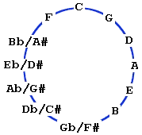

| Introduction To Music Theory |
| Here you will find an introduction to basic music theory concepts and terms. Learning basic music theory is essential part of developing your skills as a guitarist. Studying music theory will increase your overall musical knowledge as well as your ability to learn and retain new music concepts. Developing your overall musicianship and theory knowledge is just as important as developing your skills as a guitarist. This section is designed to help you further understand the infinite possibilities that exist within music and on your instrument. |
|
The study of music theory can seem intimidating, but an understanding of a few fundamentals can greatly improve any guitarist's knowledge of their instrument. It is this knowledge that separates professional players from the thousands of guitarists who never seem to improve. A good working knowledge of music theory is an essential part of your growth as a player. There are many basic music theory concepts which can easily be applied to the guitar. These concepts are organized below as individual blocks of information. Each section introduces one or more topics by expanding on the information covered in previous sections. |
Intervals and the Chromatic Scale
Virtually all western music is made up of twelve distinct tones, or notes. Each note is identified by an alphabetical letter (from A to G), followed by one of two symbols: a pound sign (#), used to indicate a sharp, and a lower case b, used to indicate a flat. If a note does not contain a symbol in it's name, it is referred to as a natural note. Together, these twelve notes make up a repeating pattern known as the Chromatic Scale, which is shown below:
A# C# D# F# G#
A | B C | D | E F | G |
Bb Db Eb Gb Ab
Notice the notes connected by lines in the above diagram. These two names actually identify the same musical tone. For example, A# and Bb are two different ways of describing the same note. This is called enharmonic notation. Generally, a note is said to be sharp if it is being compared to a lower pitch note, and flat if it is being compared to a higher pitch note. Thus, you could think of the chromatic scale as going from G up to G# using sharps, or from A down to Ab using flats. Either way is correct.
Also notice that there are no sharps or flats between E and F, or
between B and C. These notes are always consecutive letters.
Within the chromatic scale, there is an equal increase in pitch
between consecutive notes. This difference in pitch is referred to as
a Half Step. Thus, the difference in pitch between A and A# is one
half step. There are twelve different intervals that can be constructed from
the chromatic scale, and each interval contains a certain number of
half steps. For example, rather than saying 12 half steps, you could
say one Octave, which is equal to 12 half steps. This is the largest
interval possible within the chromatic scale, since there are only twelve notes, and increasing
a note by one octave is equal to exactly doubling it's pitch.
In the table below, you will find a list of the interval names and the number of half steps that each represents. As with the chromatic scale notes, some intervals have different names, but actually mean the same thing. For these intervals, both names are shown and are separated with a slash (/).
| Interval Name | Number of 1/2 steps |
|---|---|
| Unison | 0 |
|
Minor 2nd |
1 |
|
Major 2nd |
2 |
|
Minor 3rd / Augmented 2nd |
3 |
|
Major 3rd |
4 |
|
Perfect 4th |
5 |
|
Diminished 5th / Augmented 4th |
6 |
|
Perfect 5th |
7 |
|
Minor 6th / Augmented 5th |
8 |
|
Major 6th / Diminished 7th |
9 |
|
Minor 7th / Augmented 6th |
10 |
|
Major 7th |
11 |
|
Octave |
12 |
The table below illustrates all twelve intervals From the Root Note C. For the intervals which have different names, both names are shown and are separated with a slash (/).
| Interval Name | Number of 1/2 steps | Interval From The Root Note C |
|---|---|---|
| Unison | 0 | C to C (Unison = Exact same pitch) |
| Minor 2nd | 1 | C to Db |
| Major 2nd | 2 | C to D |
| Minor 3rd / Augmented 2nd | 3 | C to Eb / C to D# |
| Major 3rd | 4 | C to E |
| Perfect 4th | 5 | C to F |
| Diminished 5th / Augmented 4th | 6 | C to Gb / C to F# |
| Perfect 5th | 7 | C to G |
| Minor 6th / Augmented 5th | 8 | C to Ab / C to G# |
| Major 6th / Diminished 7th | 9 | C to A / C to Bbb (*This note is a "Double Flat") |
| Minor 7th / Augmented 6th | 10 | C to Bb / C to A# |
| Major 7th | 11 | C to B |
| Octave | 12 | C to C (Octave) |
This pattern of twelve intervals can begin on any note of the Musical Alphabet. The table above represents the twelve intervals that exist in a single Octave beginning on the note C. You should spend some time learning the twelve intervals within one Octave beginning on any note of the Musical Alphabet. These intervals, and the notes of the chromatic scale, are the basic building blocks of music. Learning their names is a must for anyone who wishes to become a well-rounded musician.
Understanding the Diatonic Major Scale is perhaps the most important fundamental of music theory. All other scales, chords, keys, and progressions can be derived from this scale, and referenced to it.
The Major Scale is built using a specific pattern of notes taken from the chromatic scale. The Major Scale is built using a pattern of seven individual notes with the eighth note of the scale being the same as the first but an octave higher. The first note of the scale is called the Root Note and is the note used to name the scale. The remaining notes are then found by using a specific formula: to build a Major Scale, the formula is W W 1/2 W W W 1/2. The W stands for a whole step (2 half steps), and the 1/2 stands for one half step. It is this formula that gives the scale it's own distinctive sound.
The following paragraphs will take you step by step through the construction of a C Major scale. As you will soon see, the C Major scale is a "natural" scale; that is, it contains no sharp or flat notes. All other Major Scales are built in the same manner, but will contain a number of "Accidentals", which are sharps or flats. The C Major scale is the easiest Major Scale to learn because of its simplicity.
To begin constructing a C Major Scale, we must first refer back to the chromatic scale, which is pictured below:
A# C# D# F# G#
A | B C | D | E F | G |
Bb Db Eb Gb Ab
Beginning with C and using the Major Scale formula (W W 1/2 W W W 1/2), the next note, or degree of the scale is D, which is a whole step up from C. The next note is E, up another whole step, and then F, which is one half step up from E. The remaining notes are G, A, and B. (Remember that the chromatic scale repeats; the scale continues with A# following the last A note). Going up one more half step, you arrive back at C, which is one octave higher than the root note. Thus, a C Major scale is made up of the notes C, D, E, F, G, A, and B.
Just for comparison, try constructing an A Major scale using the same formula, and starting at A. You should end up with the notes A, B, C#, D, E, F#, and G#. Writing out the different Major Scales is a great exercise, and you should eventually be able to construct all 12 Major Scales from memory.
The musical notes of the chromatic scale form a continuous repeating pattern. One way of organizing this pattern for easy memorization is to arrange the notes into what is called a Cycle of Fifths. This cycle can provide an amazing number of shortcuts to understanding music theory.
The cycle of fifths begins with a C note, and as it's name implies, all of it's notes are separated by a perfect fifth, or 7 half steps. To construct the pattern, begin with C and count up 7 half steps, to G. The next note will be D, which is 7 half steps up from G. Continuing in this way, you will get the complete cycle of fifths. This is shown below as a circular diagram, which is read in a clockwise direction.

Note: Reading the cycle in the opposite direction
yields a Cycle of Fourths.
Notice that counting 7 half steps up from the
F, you end up back at C, which completes the
cycle. Also, notice the enharmonic notation. Try
to memorize the cycle using both sharps and flats.
An easy way to learn the cycle of fifths is to memorize it in blocks of five. After the first note, C, the next five are G, D, A, E, and B. The next five are the same notes, but flatted: Gb, Db, Ab, Eb, and Bb. Finally, remember the last note, which is F, and you've got it!
One of the things that the cycle of fifths is useful for is memorizing the Major Scales. Instead of using a formula to figure out every Major Scale, just remember which of it's notes are sharp or flat. For example, a C Major Scale (C, D, E, F, G , A, B, C) has no sharps or flats. The next Major Scale, using the cycle of fifths, is G. The G Major Scale has one sharp, which is F# (G, A, B, C, D, E, F#, G). The D Major Scale has two sharps, and the A Major Scale has three sharps. This pattern continues though the B Major Scale with five sharps, and then switches to flats. The next Major Scale is Gb, which has only one natural note, which is F. (Notice that this is the same note that is sharped in the G Major Scale). This means that the other six notes in the Gb Major Scale are all flats. The Db Major Scale has five flats, the Ab Major Scale four flats, and so on. This continues through to the F Major Scale, which has only one flat note, and then you're back to the beginning of the cycle with the C Major Scale. Although this may sound confusing at first, it will quickly become second nature.
The following table lists all of the major scales, starting with C and continuing through the Cycle of Fifths.
A close look at this table will reveal some very interesting patterns.
| Cycle of Fifths - "Key" | Major Scale Notes - One Octave Scale | "Accidentals" - Sharps/Flats |
|---|---|---|
|
C |
C D E F G A B C |
All natural notes - no sharps, no flats |
|
G |
G A B C D E F# G |
F# |
|
D |
D E F# G A B C# D |
F#,C# |
|
A |
A B C# D E F# G# A |
F#,C#,G# |
|
E |
E F# G# A B C# D# E |
F#,C#,G#,D# |
|
B |
B C# D# E F# G# A# B |
F#,C#,G#,D#,A# |
|
Gb |
Gb Ab Bb Cb(B) Db Eb F Gb |
Bb, Eb, Ab, Db, Gb, Cb (B) |
|
Db |
Db Eb F Gb Ab Bb C Db |
Bb, Eb, Ab, Db, Gb |
|
Ab |
Ab Bb C Db Eb F G Ab |
Bb, Eb, Ab, Db |
|
Eb |
Eb F G Ab Bb C D Eb |
Bb, Eb, Ab |
|
Bb |
Bb C D Eb F G A Bb |
Bb, Eb |
|
F |
F G A Bb C D E F |
Bb |
Because of it's layout, the Cycle of Fifths is a very useful tool. Key Signatures, Scale Tones and Chord Tones, Chord Types for various Keys, and transposing information can all be derived from this simple pattern of notes. Take the time to apply other theory topics to the Cycle of Fifths. As with the Major Scales shown above, patterns will appear which will make your understanding of theory much easier.
Chords are the foundation of musical harmony. Simply put, a chord is a group of three or more notes played together; an arpeggio is the same thing as a chord, but each note of the chord is played individually. A chords' tone depends on which Major Scale notes it contains and whether or not they are "altered". For example, a C Minor chord is formed by taking the 1st, 3rd, and 5th degrees of a C Major scale (C, E, G), and then lowering the 3rd by one half step to Eb. Thus, the 3rd degree of the chord is said to be "altered". This particular note arrangement makes up a Minor Chord formula, and is written as 1 b3 5. To form any other Minor Chord, simply apply this same formula to the appropriate Major Scale. For example, an A Minor Chord contains the notes A, C, and E, which are the 1st, flatted 3rd, and 5th degrees of an A Major Scale.
All chord formulas are referenced to the Major Scale, which is the "Grandfather" of all scales. Every chord formula that you learn will be similar to the Minor Chord formula shown above; however, chord formulas may contain more than 3 notes, and each note within the chord may or may not be altered.
The following table contain a list of common chord types, their formulas, and an example for each one. Altered notes are shown as flats or sharps.
| Type of Chord | Formula | Chord Name In The Key Of C | Note Names In The Key Of C |
|---|---|---|---|
| Major |
1,3,5 |
C maj or just C |
C,E,G |
| Minor |
1,b3,5 |
C min or Cm |
C,Eb,G |
| Dominant 7th |
1,3,5,b7 |
C 7th or C7 |
C,E,G,Bb |
| Minor 7th |
1,b3,5,b7 |
C min 7th or Cm7 |
C,Eb,G,Bb |
| Major 7th |
1,3,5,7 |
C maj 7 |
C,E,G,B |
| Major 6th |
1,3,5,6 |
C 6th or C6 |
C,E,G,A |
| Minor 6th |
1,b3,5,6 |
C min 6th or Cm6 |
C,Eb,G,A |
| Minor/Major 7th |
1,b3,5,7 |
C min (Maj7) or Cm/M7 |
C,Eb,G,B |
| Major Add 9th | 1,3,5,9 | C add9 | C,E,G,D |
| Major 9th |
1,3,5,7,9 |
C maj 9th or C maj 9 |
C,E,G,B,D |
| Minor Add 9th | 1,b3,5,9 | C min add9 or Cm add9 | C,Eb,G,D |
| Minor 9th |
1,b3,5,b7,9 |
C min 9th or Cm9 |
C,Eb,G,Bb,D |
| Dominant 9th |
1,3,5,b7,9 |
C9th or C9 |
C,E,G,Bb,D |
| Suspended 2nd | 1,2,5 | C sus2 | C,D,G |
| Suspended 4th |
1,4,5 |
C sus4 or just C sus |
C,F,G |
| Dominant 7sus4 |
1,4,5,b7 |
C 7th sus4 or C7sus4 |
C,F,G,Bb |
| Augmented |
1,3,#5 |
C aug or C+ |
C,E,G# |
| Diminished |
1,b3,b5 |
C dim or C� |
C,Eb,Gb |
Try to memorize at least the first 5 or 6 chord formulas and practice constructing these chords using different Root Notes. Pick any Major Scale and then pick any Chord Formula and see if you can construct the chord using the correct notes. This is a valuable tool when learning new chord voicings and patterns on the fretboard of the guitar. This also helps you understand HOW chords are built while you also learn HOW to play them on your instrument.
The individual notes that are used to construct a chord are often referred to as Chord Tones. These notes are the building blocks of the chord, and can be found by using the Chord Formula chart listed above. The difficult part is this: Once you have found the correct Chord Tones, where are those notes on the fretboard of the guitar? This is where the concept of Chord Voicing becomes very important. By studying music theory, you can learn how to build different chord types using specific notes from the Musical Alphabet. Applying that knowledge to the neck of the guitar is a whole different area of study. The term Chord Voicing is used when describing the location and arrangement of notes within a chord. For example, a C Major chord contains three distinct notes (C E G). How many ways are there to play the notes C E G on the guitar? 10? 20? 100? This is where knowing the fretboard is just as important as knowing music theory. To truly understand the application of chord formulas, you must be able to apply your music theory knowledge to the neck of the guitar, and the only way to do that is to understand how the fretboard works. Once you have a good understanding of the guitar fretboard, building various chord voicings becomes much easier. You could spend hours with a single chord formula and come up with dozens of voicings for a single chord type. This can be done with any individual chord, or even a progression of chords. The study of chord voicings is never ending, simply because there are so many possible voicings of each chord to learn, and each voicing will have its own specific sound or tone depending on the arrangement and amount of notes used.
One of the most challenging aspects of learning scales on the guitar is knowing where to start. The most common method for learning and practicing scales on the guitar is Position Playing, which most guitarists know as Box Scales. Position Playing deals with isolating one specific area of the guitar with which to practice your scale. This allows you to work on scale forms that are much easier to learn, as opposed to memorizing the notes of a scale or Key on the entire fretboard all at once. Position Playing begins with the lowest possible location of any scale on the guitar, which is Open Position. Any scale from any Key can be played in Open Position. Form there, scales can be moved up the fretboard to other positions. The name of each Position Scale or Box Scale on the neck of the guitar comes from the specific fret locations of the notes in the scale and the specific technique that is used to play the scale. When naming specific Position Scales on the guitar, the fret location of the first finger of the fretting hand will determine the name of the position. For example, if you were practicing a D Major scale that began with the first finger of the fretting hand on the tenth fret of the Low E sting, you would be playing a D Major scale in Tenth Position. Position Playing is the most common method of scale practice used by guitarists simply because you can play the notes of any scale across all six strings without moving your hand position up or down the guitar neck.
The next method for scale practice is what is known as Linear Playing, which deals with isolating a single string and practicing the notes of a scale or Key going up and down the neck. Linear Scales can be practiced on all six strings of the guitar. The advantage of learning Linear Scales is that the Intervals used to build the scale are much easier to visualize when dealing with a single string. This method for practicing scales is one of the most important methods but it is also one of the most overlooked aspects of scale practice. There are hundreds if not thousands of guitar methods that teach Position Playing or Box Scales, but very few methods deal with Linear Playing. This is one of the many advantages of practicing scales with the Fretlight guitar. It now becomes very easy to visualize the neck in both directions - Position as well as Linear.
No matter which method you use, make sure that you �Say it as you play it� when practicing any scale. Always say the name of each scale note as you play through the scale. To fully understand the application of scales in music, you should always know the names of the notes that you are playing, and not just the fret location on the guitar. Many guitar players will learn Position Playing by memorizing the several different Position Scale forms (also known as �Box Patterns�) but they have no idea what the names of the notes are that they are playing. Remember that music is a language, and to be fluent in that language you have to know all of the right words to say, which in this case is every letter name in the scale that you are practicing. There is a big difference between learning to play a scale shape and actually learning all of the names of the notes that are used in the scale. There is also a big difference between developing your skills as a guitarist and developing your skills as a musician.